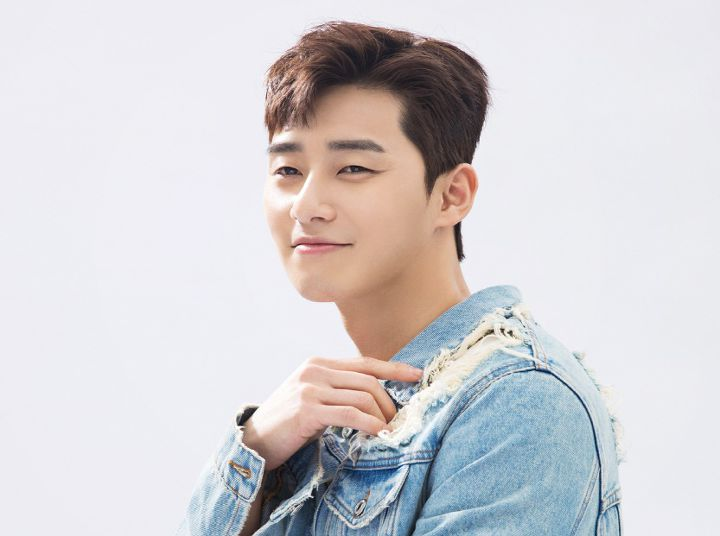

HTML대한민국의 배우. 다정한 말투, 외꺼풀의 눈과 서글서글한 눈매, 큰 키와 좋은 비율[5]을 지녔으며, 안정적인 연기력을 바탕으로 차근차근 필모를 쌓아 가고 있다.
2011년 B.A.P 방용국의 'I Remember' 뮤직비디오 주인공으로 정식 데뷔했으며, 다음 해인 2012년 KBS 2TV 드라마 '드림하이 2' 에서 마성의 아이돌 시우 역을 맡아 본격적인 연기 활동을 시작했다. 전작인 '드림하이' 보단 흥행하진 못했지만, 배우 본인을 알리는 데에는 성공했다는 평. 춤신춤왕 박서준을 감상할 수 있는 레어한 초기작품이다.